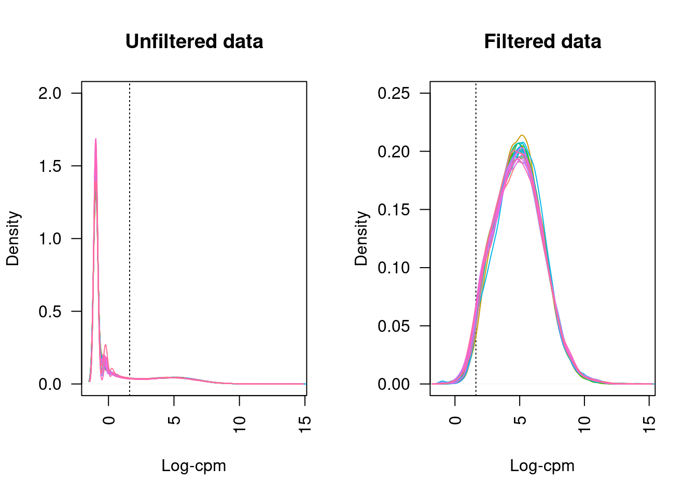
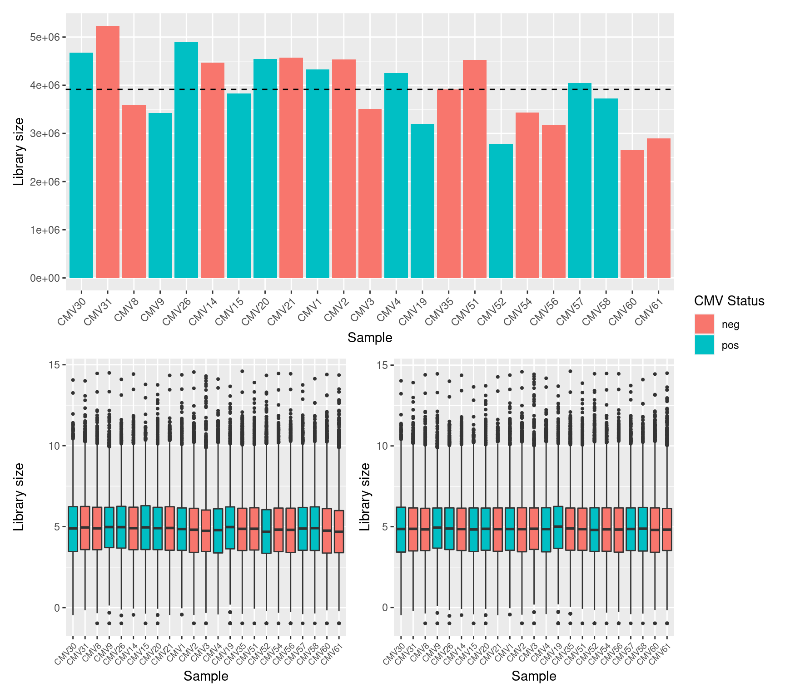
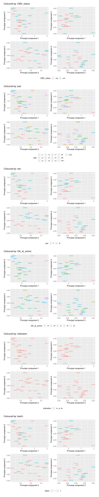
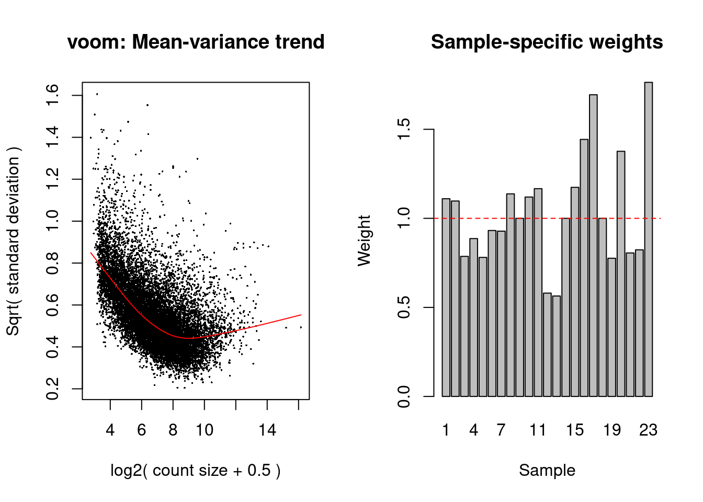
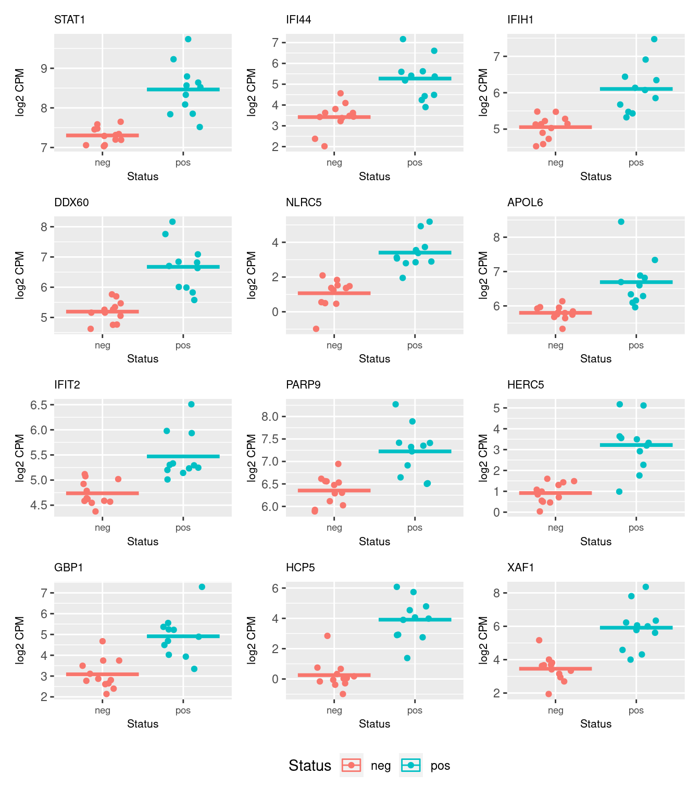
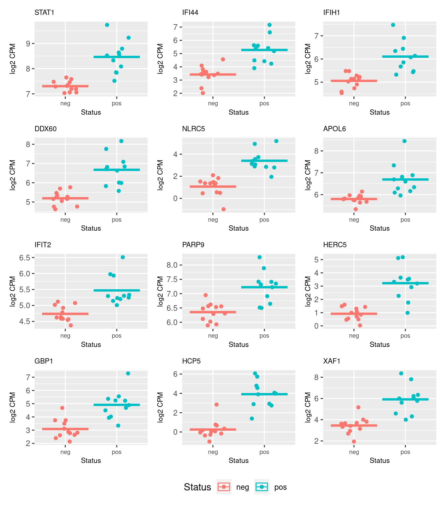
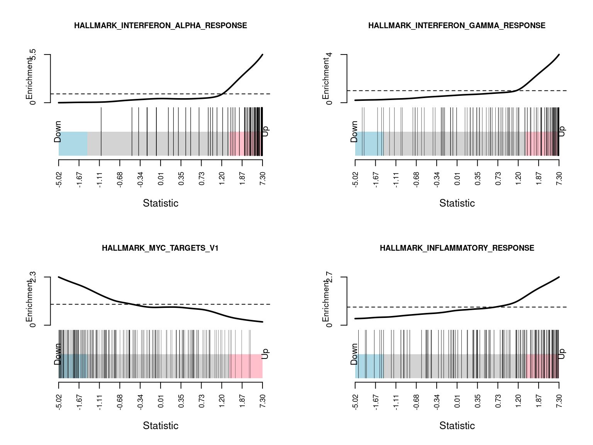
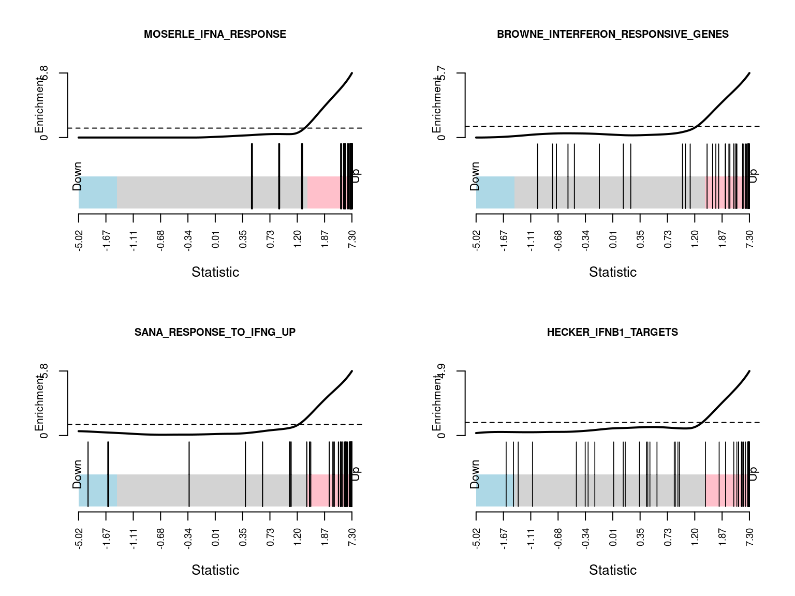
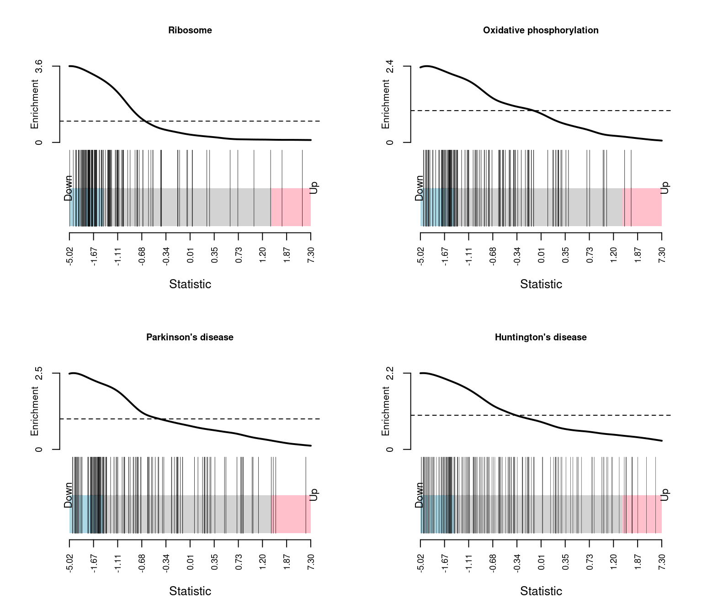
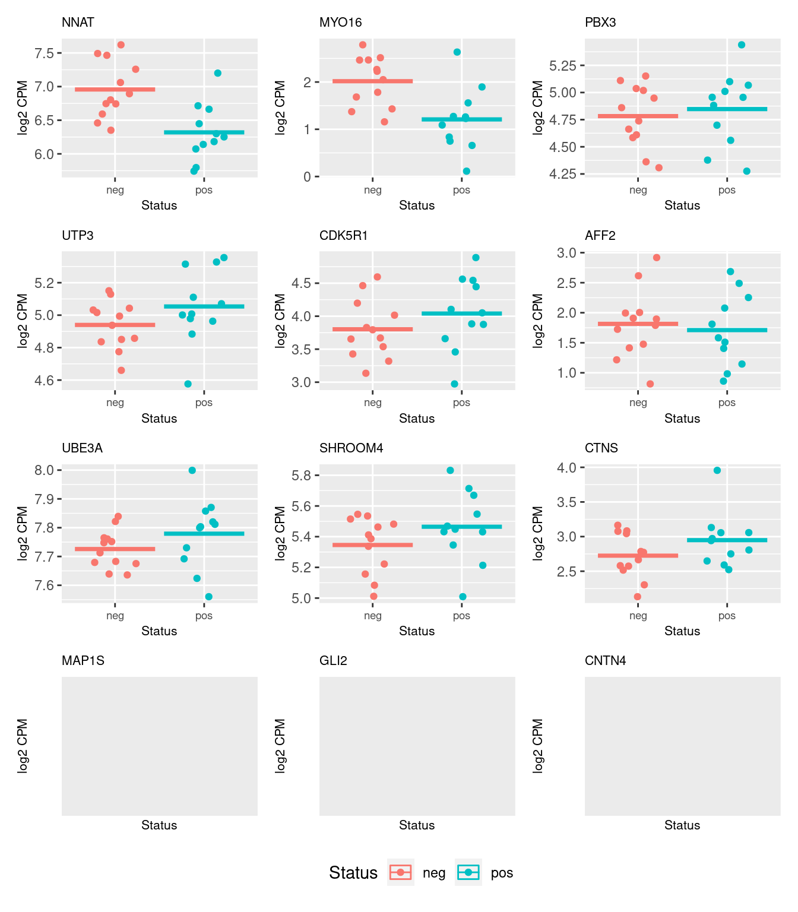

Last updated: 2020-11-06
Checks: 7 0
Knit directory: amnio-cell-free-RNA/
This reproducible R Markdown analysis was created with workflowr (version 1.6.2). The Checks tab describes the reproducibility checks that were applied when the results were created. The Past versions tab lists the development history.
Great! Since the R Markdown file has been committed to the Git repository, you know the exact version of the code that produced these results.
Great job! The global environment was empty. Objects defined in the global environment can affect the analysis in your R Markdown file in unknown ways. For reproduciblity it’s best to always run the code in an empty environment.
The command set.seed(20200224) was run prior to running the code in the R Markdown file. Setting a seed ensures that any results that rely on randomness, e.g. subsampling or permutations, are reproducible.
Great job! Recording the operating system, R version, and package versions is critical for reproducibility.
Nice! There were no cached chunks for this analysis, so you can be confident that you successfully produced the results during this run.
Great job! Using relative paths to the files within your workflowr project makes it easier to run your code on other machines.
Great! You are using Git for version control. Tracking code development and connecting the code version to the results is critical for reproducibility.
The results in this page were generated with repository version 787e0a1. See the Past versions tab to see a history of the changes made to the R Markdown and HTML files.
Note that you need to be careful to ensure that all relevant files for the analysis have been committed to Git prior to generating the results (you can use wflow_publish or wflow_git_commit). workflowr only checks the R Markdown file, but you know if there are other scripts or data files that it depends on. Below is the status of the Git repository when the results were generated:
Ignored files:
Ignored: .Rhistory
Ignored: .Rproj.user/
Ignored: code/.bpipe/
Ignored: code/.rnaseq-test.groovy.swp
Ignored: code/fastqc/
Ignored: data/.bpipe/
Ignored: data/190717_A00692_0021_AHLLHFDSXX/
Ignored: data/190729_A00692_0022_AHLLHFDSXX/
Ignored: data/190802_A00692_0023_AHLLHFDSXX/
Ignored: data/200612_A00692_0107_AHN3YCDMXX.tar
Ignored: data/200612_A00692_0107_AHN3YCDMXX/
Ignored: data/200626_A00692_0111_AHNJH7DMXX.tar
Ignored: data/200626_A00692_0111_AHNJH7DMXX/
Ignored: data/CMV-AF-database-corrected-oct-2020.csv
Ignored: data/CMV-AF-database-final-included-samples.csv
Ignored: data/GONE4.10.13.txt
Ignored: data/HK_genes.txt
Ignored: data/IPA molecule summary.xls
Ignored: data/IPA-molecule-summary.csv
Ignored: data/bpipe.config
Ignored: data/brain-development-geneset.txt
Ignored: data/catfastq/
Ignored: data/commandlog.txt
Ignored: data/counts-pe/
Ignored: data/counts-se/
Ignored: data/deduped/
Ignored: data/fastqc/
Ignored: data/joindata.csv
Ignored: data/mapped/
Ignored: data/metadata.csv
Ignored: data/multiqc_data/
Ignored: data/multiqc_report.html
Ignored: data/old/
Ignored: data/samples.csv
Ignored: data/sorted/
Ignored: data/test/
Ignored: data/trimmed/
Ignored: output/c2Ens.RData
Ignored: output/c5Ens.RData
Ignored: output/exclude-CMV11/
Ignored: output/hEns.RData
Ignored: output/keggEns.RData
Ignored: output/salmon-limma-voom-c5Cam.csv
Ignored: output/salmon-limma-voom.Rmd/
Ignored: output/salmon-limma-voom.csv
Ignored: output/salmon-ruvseq-edger.csv
Ignored: output/star-fc-limma-voom-all-gsea-c5.csv
Ignored: output/star-fc-limma-voom-all.csv
Ignored: output/star-fc-limma-voom-no_us_ab-gsea-c5.csv
Ignored: output/star-fc-limma-voom-no_us_ab.csv
Ignored: output/star-fc-ruv-all-gsea-c5.csv
Ignored: output/star-fc-ruv-all.csv
Untracked files:
Untracked: analysis/STAR-FC-RUV-all.Rmd
Untracked: analysis/salmon-ruvseq-edger.Rmd
Unstaged changes:
Modified: analysis/salmon-limma-voom-exclude-CMV11.Rmd
Modified: analysis/salmon-limma-voom.Rmd
Note that any generated files, e.g. HTML, png, CSS, etc., are not included in this status report because it is ok for generated content to have uncommitted changes.
These are the previous versions of the repository in which changes were made to the R Markdown (analysis/STAR-FC-exclude-US-ab.Rmd) and HTML (docs/STAR-FC-exclude-US-ab.html) files. If you’ve configured a remote Git repository (see ?wflow_git_remote), click on the hyperlinks in the table below to view the files as they were in that past version.
| File | Version | Author | Date | Message |
|---|---|---|---|---|
| Rmd | 787e0a1 | Jovana Maksimovic | 2020-11-06 | wflow_publish(c(“analysis/STAR-FC-all.Rmd”, “analysis/STAR-FC-exclude-US-ab.Rmd”, |
The data showed some adapter contamination and sequence duplication issues. Adapters were removed using Trimmomatic and both paired and unpaired reads were retained. Only paired reads were initially mapped with Star in conjunction with GRCh38 and gencode_v34 to detect all junctions, across all samples. Paired and unpaired reads were then mapped to GRCh38 separately using Star. Duplicates were removed from paired and unpaired mapped data using Picard MarkDuplicates. Reads were then counted across features from gencode_v34 using featureCounts.
Set up DGElist object for downstream analysis. Sum paired and unpaired counts prior to downstream analysis.
An object of class "DGEList"
$counts
CMV30 CMV31 CMV8 CMV9 CMV26 CMV27 CMV14 CMV15 CMV20 CMV21 CMV1 CMV2 CMV3 CMV4
1 0 0 0 0 2 2 0 1 0 1 1 0 1 0
2 58 95 58 59 113 101 60 48 79 71 54 63 39 46
3 1 0 0 0 0 0 0 0 0 0 0 0 0 0
4 0 0 0 0 0 0 0 0 0 0 1 0 1 0
5 0 0 0 0 0 0 0 0 0 0 0 0 0 0
CMV10 CMV11 CMV18 CMV19 CMV35 Corriel NTC-2 CMV51 CMV52 CMV53 CMV54 CMV56
1 0 0 0 0 1 1 0 0 0 0 0 0
2 62 35 51 45 59 84 0 63 28 49 46 37
3 0 0 0 0 0 1 0 0 0 0 0 0
4 0 0 0 0 0 0 0 0 0 0 0 0
5 0 0 0 0 0 0 0 0 0 0 0 0
CMV57 CMV58 CMV60 CMV61
1 0 2 1 2
2 59 82 44 36
3 0 0 0 0
4 0 0 1 0
5 0 0 0 0
60664 more rows ...
$samples
group lib.size norm.factors
CMV30 1 4673630 1
CMV31 1 5232010 1
CMV8 1 3594801 1
CMV9 1 3425478 1
CMV26 1 4892776 1
25 more rows ...
$genes
Geneid Length
1 ENSG00000223972.5 1735
2 ENSG00000227232.5 1351
3 ENSG00000278267.1 68
4 ENSG00000243485.5 1021
5 ENSG00000284332.1 138
60664 more rows ...Load sample information and file names. Exclude samples with ultrasound abnormalities.
# A tibble: 23 x 7
id CMV_status pair sex GA_at_amnio indication batch
<chr> <chr> <chr> <chr> <chr> <chr> <fct>
1 CMV30 pos L1 F 21 no_us_ab 1
2 CMV31 neg L1 F 21 no_us_ab 1
3 CMV8 neg L2 F 23 no_us_ab 1
4 CMV9 pos L2 F 23 no_us_ab 1
5 CMV26 pos L3 F 22 no_us_ab 1
6 CMV14 neg L4 F 21 no_us_ab 1
7 CMV15 pos L4 F 22 no_us_ab 1
8 CMV20 pos L5 M 21 no_us_ab 1
9 CMV21 neg NC1 F 21 no_us_ab 1
10 CMV1 pos M1 F 21 no_us_ab 1
# … with 13 more rowsGenes that do not have an adequate number of reads in any sample should be filtered out prior to downstream analyses. From a biological perspective, genes that are not expressed at a biologically meaningful level in any condition are not of interest. Statistically, we get a better estimate of the mean-variance relationship in the data and reduce the number of statistical tests that are performed during differential expression analyses.
Filter out lowly expressed genes and genes without Entrez IDs and calculate TMM normalization factors.
An object of class "DGEList"
$counts
CMV30 CMV31 CMV8 CMV9 CMV26 CMV14 CMV15 CMV20 CMV21 CMV1 CMV2 CMV3 CMV4
32 20 36 28 42 28 25 19 26 18 32 25 55 31
52 88 73 55 43 55 75 53 64 55 61 68 36 62
55 6 15 17 15 15 9 14 13 12 7 10 16 12
63 148 172 148 126 175 179 176 141 179 155 194 121 123
64 14 15 14 11 20 14 9 13 14 13 13 19 10
CMV19 CMV35 CMV51 CMV52 CMV54 CMV56 CMV57 CMV58 CMV60 CMV61
32 22 24 25 19 20 18 23 24 8 20
52 35 47 59 49 37 38 49 65 49 49
55 11 9 19 9 12 7 7 7 5 6
63 107 164 144 71 137 136 122 131 88 108
64 6 9 14 3 12 5 7 12 5 3
12794 more rows ...
$samples
group lib.size norm.factors
CMV30 1 4673630 1.019470
CMV31 1 5232010 1.060036
CMV8 1 3594801 1.042513
CMV9 1 3425478 1.024935
CMV26 1 4892776 1.065154
18 more rows ...
$genes
Geneid Length Ensembl symbol entrezid
32 ENSG00000230021.10 5495 ENSG00000230021 RP5-857K21.4 101928626
52 ENSG00000228794.10 15682 ENSG00000228794 LINC01128 643837
55 ENSG00000230368.2 1971 ENSG00000230368 FAM41C 284593
63 ENSG00000188976.11 5540 ENSG00000188976 NOC2L 26155
64 ENSG00000187961.14 3402 ENSG00000187961 KLHL17 339451
12794 more rows ...
$group
[1] "pos" "neg" "neg" "pos" "pos"
18 more elements ...Plotting the distribution log-CPM values shows that a majority of genes within each sample are either not expressed or lowly-expressed with log-CPM values that are small or negative.

Although in excess of 30 million reads were obtained per sample, we can see that after mapping, duplicate removal and quantification of gene expression the median library size is just under than 4 million reads. This suggests that we are likely to only be capturing the most abundant cfRNAs.
It is assumed that all samples should have a similar range and distribution of expression values. The raw data looks fairly uniform between samples, although TMM normalization further improves this.

Multi-dimensional scaling (MDS) plots show the largest sources of variation in the data. They are a good way of exploring the relationships between the samples and identifying structure in the data. The following series of MDS plots examines the first four principal components. The samples are coloured by various known features of the samples such as CMV Status and foetal sex. The MDS plots do not show the samples strongly clustering by any of the known features of the data, although there does seem to be some separation between the CMV positive and negative samples in the 1st and 2nd principal components. This indicates that there are possibly some differentially expressed genes between CMV positive and negative samples.
A weak batch effect is also evident in the 3rd principal component, when we examine the plots coloured by batch.

Due to the variability in the data, the TMM normalised data was transformed using voomWithQualityWeights. This takes into account the differing library sizes and the mean variance relationship in the data as well as calculating sample-specific quality weights. Linear models were fit in limma, taking into account the voom weights. The CMV positive samples were compared to the CMV negative samples, taking into account the sample pairs. A summary of the number of differentially expressed genes is shown below.

pos - neg
Down 0
NotSig 12791
Up 8There were 0 down-regulated and 8 up-regulated genes between CMV positive and CMV negative samples at FDR < 0.05.
These are the top 10 differentially expressed genes.
Geneid Length Ensembl symbol entrezid logFC
8687 ENSG00000115415.20 9770 ENSG00000115415 STAT1 6772 1.0336003
2095 ENSG00000137965.11 2038 ENSG00000137965 IFI44 10561 1.5521034
8282 ENSG00000115267.8 5094 ENSG00000115267 IFIH1 64135 0.8848411
15204 ENSG00000137628.17 6746 ENSG00000137628 DDX60 55601 1.3304615
45751 ENSG00000140853.15 12386 ENSG00000140853 NLRC5 84166 2.4446384
57140 ENSG00000221963.6 10065 ENSG00000221963 APOL6 80830 0.7363985
30927 ENSG00000119922.10 4074 ENSG00000119922 IFIT2 3433 0.6197264
11478 ENSG00000138496.16 8938 ENSG00000138496 PARP9 83666 0.7279588
14201 ENSG00000138646.9 4764 ENSG00000138646 HERC5 51191 2.5801037
2226 ENSG00000117228.10 4862 ENSG00000117228 GBP1 2633 1.7892937
AveExpr t P.Value adj.P.Val B
8687 7.856738 7.295446 4.720523e-06 0.02036436 4.478385
2095 4.268607 7.213721 6.578602e-06 0.02036436 3.946960
8282 5.543087 6.760372 8.241465e-06 0.02036436 3.921731
15204 5.889855 6.970727 1.205181e-05 0.02203586 3.626953
45751 1.965882 7.117168 5.933974e-06 0.02036436 2.678514
57140 6.217797 5.723505 5.105711e-05 0.05483173 2.207569
30927 5.071207 5.558362 5.807211e-05 0.05483173 2.070201
11478 6.764147 5.619835 6.357766e-05 0.05483173 1.998775
14201 1.798125 6.773025 9.546537e-06 0.02036436 1.967012
2226 3.910000 5.942386 5.355300e-05 0.05483173 1.904474The following plots show the expression of the top 12 ranked differentially expressed genes for CMV positive and CMV negative samples. Although there is significant variability within the groups and the log2 fold changes are not large, there are obvious differences in expression for the top ranked genes.


Testing for enrichment of Gene Ontology (GO) categories among statistically significant differentially expressed genes.
Term Ont N DE
GO:0009615 response to virus BP 221 6
GO:0051607 defense response to virus BP 161 5
GO:0043207 response to external biotic stimulus BP 535 6
GO:0051707 response to other organism BP 535 6
GO:0098542 defense response to other organism BP 257 5
GO:0009607 response to biotic stimulus BP 563 6
GO:0032479 regulation of type I interferon production BP 107 4
GO:0032606 type I interferon production BP 109 4
GO:0032480 negative regulation of type I interferon production BP 39 3
GO:0001817 regulation of cytokine production BP 427 5
GO:0001816 cytokine production BP 469 5
GO:0031347 regulation of defense response BP 486 5
GO:0050688 regulation of defense response to virus BP 58 3
GO:0045087 innate immune response BP 542 5
GO:0039530 MDA-5 signaling pathway BP 9 2
GO:0045088 regulation of innate immune response BP 305 4
GO:0002831 regulation of response to biotic stimulus BP 97 3
GO:0009605 response to external stimulus BP 1350 6
GO:0002252 immune effector process BP 754 5
GO:0032727 positive regulation of interferon-alpha production BP 16 2
P.DE
GO:0009615 6.863619e-10
GO:0051607 1.632415e-08
GO:0043207 1.377329e-07
GO:0051707 1.377329e-07
GO:0098542 1.699504e-07
GO:0009607 1.865864e-07
GO:0032479 3.188286e-07
GO:0032606 3.435308e-07
GO:0032480 1.462810e-06
GO:0001817 2.112560e-06
GO:0001816 3.355640e-06
GO:0031347 3.998785e-06
GO:0050688 4.911321e-06
GO:0045087 6.835192e-06
GO:0039530 1.235577e-05
GO:0045088 2.077078e-05
GO:0002831 2.319949e-05
GO:0009605 3.218061e-05
GO:0002252 3.428352e-05
GO:0032727 4.109558e-05GSEA helps us to interpret the results of a differential expression analysis. The camera function performs a competitive test to assess whether the genes in a given set are highly ranked in terms of differential expression relative to genes that are not in the set. We have tested several collections of gene sets from the Broad Institute’s Molecular Signatures Database MSigDB.
Build gene set indexes.
[1] "Loading MSigDB Gene Sets ... "
[1] "Loaded gene sets for the collection h ..."
[1] "Indexed the collection h ..."
[1] "Created annotation for the collection h ..."
[1] "Loaded gene sets for the collection c2 ..."
[1] "Indexed the collection c2 ..."
[1] "Created annotation for the collection c2 ..."
[1] "Loaded gene sets for the collection c5 ..."
[1] "Indexed the collection c5 ..."
[1] "Created annotation for the collection c5 ..."
[1] "Building KEGG pathways annotation object ... "The GO gene sets consist of genes annotated by the same GO terms.
NGenes
GO_RESPONSE_TO_TYPE_I_INTERFERON 47
GO_CYTOSOLIC_RIBOSOME 98
GO_ESTABLISHMENT_OF_PROTEIN_LOCALIZATION_TO_ENDOPLASMIC_RETICULUM 96
GO_CYTOSOLIC_LARGE_RIBOSOMAL_SUBUNIT 54
GO_PROTEIN_LOCALIZATION_TO_ENDOPLASMIC_RETICULUM 111
GO_RIBOSOMAL_SUBUNIT 147
GO_DEFENSE_RESPONSE_TO_VIRUS 110
GO_TRANSLATIONAL_INITIATION 136
GO_MULTI_ORGANISM_METABOLIC_PROCESS 132
GO_NUCLEAR_TRANSCRIBED_MRNA_CATABOLIC_PROCESS_NONSENSE_MEDIATED_DECAY 112
GO_ANTIGEN_PROCESSING_AND_PRESENTATION_OF_ENDOGENOUS_PEPTIDE_ANTIGEN 11
GO_RIBOSOME 198
GO_STRUCTURAL_CONSTITUENT_OF_RIBOSOME 180
GO_ANTIGEN_PROCESSING_AND_PRESENTATION_OF_ENDOGENOUS_ANTIGEN 13
GO_LARGE_RIBOSOMAL_SUBUNIT 86
GO_INTERFERON_GAMMA_MEDIATED_SIGNALING_PATHWAY 44
GO_PROTEIN_TARGETING_TO_MEMBRANE 136
GO_CYTOSOLIC_PART 181
GO_CYTOSOLIC_SMALL_RIBOSOMAL_SUBUNIT 38
GO_CELLULAR_RESPONSE_TO_INTERFERON_GAMMA 60
Direction
GO_RESPONSE_TO_TYPE_I_INTERFERON Up
GO_CYTOSOLIC_RIBOSOME Down
GO_ESTABLISHMENT_OF_PROTEIN_LOCALIZATION_TO_ENDOPLASMIC_RETICULUM Down
GO_CYTOSOLIC_LARGE_RIBOSOMAL_SUBUNIT Down
GO_PROTEIN_LOCALIZATION_TO_ENDOPLASMIC_RETICULUM Down
GO_RIBOSOMAL_SUBUNIT Down
GO_DEFENSE_RESPONSE_TO_VIRUS Up
GO_TRANSLATIONAL_INITIATION Down
GO_MULTI_ORGANISM_METABOLIC_PROCESS Down
GO_NUCLEAR_TRANSCRIBED_MRNA_CATABOLIC_PROCESS_NONSENSE_MEDIATED_DECAY Down
GO_ANTIGEN_PROCESSING_AND_PRESENTATION_OF_ENDOGENOUS_PEPTIDE_ANTIGEN Up
GO_RIBOSOME Down
GO_STRUCTURAL_CONSTITUENT_OF_RIBOSOME Down
GO_ANTIGEN_PROCESSING_AND_PRESENTATION_OF_ENDOGENOUS_ANTIGEN Up
GO_LARGE_RIBOSOMAL_SUBUNIT Down
GO_INTERFERON_GAMMA_MEDIATED_SIGNALING_PATHWAY Up
GO_PROTEIN_TARGETING_TO_MEMBRANE Down
GO_CYTOSOLIC_PART Down
GO_CYTOSOLIC_SMALL_RIBOSOMAL_SUBUNIT Down
GO_CELLULAR_RESPONSE_TO_INTERFERON_GAMMA Up
PValue
GO_RESPONSE_TO_TYPE_I_INTERFERON 2.369414e-21
GO_CYTOSOLIC_RIBOSOME 3.563809e-15
GO_ESTABLISHMENT_OF_PROTEIN_LOCALIZATION_TO_ENDOPLASMIC_RETICULUM 1.137495e-14
GO_CYTOSOLIC_LARGE_RIBOSOMAL_SUBUNIT 3.133500e-13
GO_PROTEIN_LOCALIZATION_TO_ENDOPLASMIC_RETICULUM 1.481488e-12
GO_RIBOSOMAL_SUBUNIT 2.383730e-12
GO_DEFENSE_RESPONSE_TO_VIRUS 6.241218e-12
GO_TRANSLATIONAL_INITIATION 8.835365e-12
GO_MULTI_ORGANISM_METABOLIC_PROCESS 4.758185e-11
GO_NUCLEAR_TRANSCRIBED_MRNA_CATABOLIC_PROCESS_NONSENSE_MEDIATED_DECAY 4.915947e-11
GO_ANTIGEN_PROCESSING_AND_PRESENTATION_OF_ENDOGENOUS_PEPTIDE_ANTIGEN 1.377141e-10
GO_RIBOSOME 1.590702e-10
GO_STRUCTURAL_CONSTITUENT_OF_RIBOSOME 2.135680e-10
GO_ANTIGEN_PROCESSING_AND_PRESENTATION_OF_ENDOGENOUS_ANTIGEN 3.513223e-10
GO_LARGE_RIBOSOMAL_SUBUNIT 3.513654e-10
GO_INTERFERON_GAMMA_MEDIATED_SIGNALING_PATHWAY 5.574902e-10
GO_PROTEIN_TARGETING_TO_MEMBRANE 1.988825e-09
GO_CYTOSOLIC_PART 2.458605e-09
GO_CYTOSOLIC_SMALL_RIBOSOMAL_SUBUNIT 2.135698e-08
GO_CELLULAR_RESPONSE_TO_INTERFERON_GAMMA 4.370187e-08
FDR
GO_RESPONSE_TO_TYPE_I_INTERFERON 1.459796e-17
GO_CYTOSOLIC_RIBOSOME 1.097831e-11
GO_ESTABLISHMENT_OF_PROTEIN_LOCALIZATION_TO_ENDOPLASMIC_RETICULUM 2.336036e-11
GO_CYTOSOLIC_LARGE_RIBOSOMAL_SUBUNIT 4.826374e-10
GO_PROTEIN_LOCALIZATION_TO_ENDOPLASMIC_RETICULUM 1.825489e-09
GO_RIBOSOMAL_SUBUNIT 2.447693e-09
GO_DEFENSE_RESPONSE_TO_VIRUS 5.493163e-09
GO_TRANSLATIONAL_INITIATION 6.804335e-09
GO_MULTI_ORGANISM_METABOLIC_PROCESS 3.028715e-08
GO_NUCLEAR_TRANSCRIBED_MRNA_CATABOLIC_PROCESS_NONSENSE_MEDIATED_DECAY 3.028715e-08
GO_ANTIGEN_PROCESSING_AND_PRESENTATION_OF_ENDOGENOUS_PEPTIDE_ANTIGEN 7.713243e-08
GO_RIBOSOME 8.166927e-08
GO_STRUCTURAL_CONSTITUENT_OF_RIBOSOME 1.012148e-07
GO_ANTIGEN_PROCESSING_AND_PRESENTATION_OF_ENDOGENOUS_ANTIGEN 1.443175e-07
GO_LARGE_RIBOSOMAL_SUBUNIT 1.443175e-07
GO_INTERFERON_GAMMA_MEDIATED_SIGNALING_PATHWAY 2.146686e-07
GO_PROTEIN_TARGETING_TO_MEMBRANE 7.207734e-07
GO_CYTOSOLIC_PART 8.415260e-07
GO_CYTOSOLIC_SMALL_RIBOSOMAL_SUBUNIT 6.925280e-06
GO_CELLULAR_RESPONSE_TO_INTERFERON_GAMMA 1.346236e-05The Hallmark gene sets are coherently expressed signatures derived by aggregating many MSigDB gene sets to represent well-defined biological states or processes.
NGenes Direction PValue
HALLMARK_INTERFERON_ALPHA_RESPONSE 80 Up 4.978711e-36
HALLMARK_INTERFERON_GAMMA_RESPONSE 147 Up 2.315239e-26
HALLMARK_MYC_TARGETS_V1 198 Down 2.437045e-07
HALLMARK_INFLAMMATORY_RESPONSE 116 Up 6.830235e-07
HALLMARK_KRAS_SIGNALING_UP 133 Up 7.943461e-06
HALLMARK_OXIDATIVE_PHOSPHORYLATION 197 Down 4.249647e-05
HALLMARK_TNFA_SIGNALING_VIA_NFKB 163 Up 5.381291e-05
HALLMARK_E2F_TARGETS 196 Down 1.803760e-04
HALLMARK_COMPLEMENT 141 Up 8.361858e-04
HALLMARK_ALLOGRAFT_REJECTION 103 Up 9.474904e-04
HALLMARK_IL6_JAK_STAT3_SIGNALING 48 Up 1.725236e-03
HALLMARK_DNA_REPAIR 145 Down 2.229696e-03
HALLMARK_MYOGENESIS 123 Down 8.439562e-03
HALLMARK_APICAL_SURFACE 31 Up 1.517137e-02
HALLMARK_G2M_CHECKPOINT 194 Down 3.088973e-02
HALLMARK_REACTIVE_OXIGEN_SPECIES_PATHWAY 44 Down 3.464657e-02
HALLMARK_MYC_TARGETS_V2 54 Down 4.381103e-02
HALLMARK_ANDROGEN_RESPONSE 96 Up 4.695885e-02
HALLMARK_APICAL_JUNCTION 147 Down 5.484607e-02
HALLMARK_TGF_BETA_SIGNALING 52 Up 6.336816e-02
FDR
HALLMARK_INTERFERON_ALPHA_RESPONSE 2.489356e-34
HALLMARK_INTERFERON_GAMMA_RESPONSE 5.788097e-25
HALLMARK_MYC_TARGETS_V1 4.061742e-06
HALLMARK_INFLAMMATORY_RESPONSE 8.537793e-06
HALLMARK_KRAS_SIGNALING_UP 7.943461e-05
HALLMARK_OXIDATIVE_PHOSPHORYLATION 3.541372e-04
HALLMARK_TNFA_SIGNALING_VIA_NFKB 3.843779e-04
HALLMARK_E2F_TARGETS 1.127350e-03
HALLMARK_COMPLEMENT 4.645476e-03
HALLMARK_ALLOGRAFT_REJECTION 4.737452e-03
HALLMARK_IL6_JAK_STAT3_SIGNALING 7.841982e-03
HALLMARK_DNA_REPAIR 9.290400e-03
HALLMARK_MYOGENESIS 3.245985e-02
HALLMARK_APICAL_SURFACE 5.418346e-02
HALLMARK_G2M_CHECKPOINT 1.029658e-01
HALLMARK_REACTIVE_OXIGEN_SPECIES_PATHWAY 1.082705e-01
HALLMARK_MYC_TARGETS_V2 1.288560e-01
HALLMARK_ANDROGEN_RESPONSE 1.304412e-01
HALLMARK_APICAL_JUNCTION 1.443318e-01
HALLMARK_TGF_BETA_SIGNALING 1.584204e-01Barcode plots show the enrichment of gene sets among up or down-regulated genes. The following barcode plots show the enrichment of the top 4 hallmark gene sets among the genes differentially expressed between CMV positive and CMV negative samples.

[[1]]
NULL
[[2]]
NULL
[[3]]
NULL
[[4]]
NULLThe curated gene sets are compiled from online pathway databases, publications in PubMed, and knowledge of domain experts.
NGenes Direction
MOSERLE_IFNA_RESPONSE 27 Up
BROWNE_INTERFERON_RESPONSIVE_GENES 54 Up
SANA_RESPONSE_TO_IFNG_UP 47 Up
HECKER_IFNB1_TARGETS 60 Up
FARMER_BREAST_CANCER_CLUSTER_1 15 Up
DAUER_STAT3_TARGETS_DN 49 Up
BOSCO_INTERFERON_INDUCED_ANTIVIRAL_MODULE 60 Up
SANA_TNF_SIGNALING_UP 62 Up
REACTOME_INTERFERON_ALPHA_BETA_SIGNALING 44 Up
BOWIE_RESPONSE_TO_TAMOXIFEN 16 Up
BENNETT_SYSTEMIC_LUPUS_ERYTHEMATOSUS 24 Up
EINAV_INTERFERON_SIGNATURE_IN_CANCER 23 Up
SEITZ_NEOPLASTIC_TRANSFORMATION_BY_8P_DELETION_UP 57 Up
REACTOME_PEPTIDE_CHAIN_ELONGATION 78 Down
BOWIE_RESPONSE_TO_EXTRACELLULAR_MATRIX 16 Up
REACTOME_INFLUENZA_VIRAL_RNA_TRANSCRIPTION_AND_REPLICATION 94 Down
ROETH_TERT_TARGETS_UP 13 Up
RADAEVA_RESPONSE_TO_IFNA1_UP 44 Up
ZHANG_INTERFERON_RESPONSE 18 Up
TAKEDA_TARGETS_OF_NUP98_HOXA9_FUSION_3D_UP 128 Up
PValue
MOSERLE_IFNA_RESPONSE 2.833989e-38
BROWNE_INTERFERON_RESPONSIVE_GENES 7.682355e-33
SANA_RESPONSE_TO_IFNG_UP 2.467671e-30
HECKER_IFNB1_TARGETS 1.293510e-29
FARMER_BREAST_CANCER_CLUSTER_1 1.386829e-26
DAUER_STAT3_TARGETS_DN 1.310550e-23
BOSCO_INTERFERON_INDUCED_ANTIVIRAL_MODULE 3.965900e-22
SANA_TNF_SIGNALING_UP 3.370875e-20
REACTOME_INTERFERON_ALPHA_BETA_SIGNALING 1.836713e-19
BOWIE_RESPONSE_TO_TAMOXIFEN 5.912614e-18
BENNETT_SYSTEMIC_LUPUS_ERYTHEMATOSUS 2.432679e-17
EINAV_INTERFERON_SIGNATURE_IN_CANCER 3.543423e-17
SEITZ_NEOPLASTIC_TRANSFORMATION_BY_8P_DELETION_UP 7.897881e-17
REACTOME_PEPTIDE_CHAIN_ELONGATION 8.938704e-17
BOWIE_RESPONSE_TO_EXTRACELLULAR_MATRIX 1.812358e-16
REACTOME_INFLUENZA_VIRAL_RNA_TRANSCRIPTION_AND_REPLICATION 2.803150e-16
ROETH_TERT_TARGETS_UP 3.364616e-16
RADAEVA_RESPONSE_TO_IFNA1_UP 3.702857e-16
ZHANG_INTERFERON_RESPONSE 6.362348e-16
TAKEDA_TARGETS_OF_NUP98_HOXA9_FUSION_3D_UP 3.778996e-15
FDR
MOSERLE_IFNA_RESPONSE 1.060195e-34
BROWNE_INTERFERON_RESPONSIVE_GENES 1.436984e-29
SANA_RESPONSE_TO_IFNG_UP 3.077186e-27
HECKER_IFNB1_TARGETS 1.209755e-26
FARMER_BREAST_CANCER_CLUSTER_1 1.037625e-23
DAUER_STAT3_TARGETS_DN 8.171278e-21
BOSCO_INTERFERON_INDUCED_ANTIVIRAL_MODULE 2.119490e-19
SANA_TNF_SIGNALING_UP 1.576305e-17
REACTOME_INTERFERON_ALPHA_BETA_SIGNALING 7.634602e-17
BOWIE_RESPONSE_TO_TAMOXIFEN 2.211909e-15
BENNETT_SYSTEMIC_LUPUS_ERYTHEMATOSUS 8.273321e-15
EINAV_INTERFERON_SIGNATURE_IN_CANCER 1.104662e-14
SEITZ_NEOPLASTIC_TRANSFORMATION_BY_8P_DELETION_UP 2.272767e-14
REACTOME_PEPTIDE_CHAIN_ELONGATION 2.388549e-14
BOWIE_RESPONSE_TO_EXTRACELLULAR_MATRIX 4.520021e-14
REACTOME_INFLUENZA_VIRAL_RNA_TRANSCRIPTION_AND_REPLICATION 6.554114e-14
ROETH_TERT_TARGETS_UP 7.404134e-14
RADAEVA_RESPONSE_TO_IFNA1_UP 7.695771e-14
ZHANG_INTERFERON_RESPONSE 1.252713e-13
TAKEDA_TARGETS_OF_NUP98_HOXA9_FUSION_3D_UP 7.065823e-13The following barcode plots show the enrichment of the top 4 curated gene sets among the genes differentially expressed between CMV positive and CMV negative samples.

[[1]]
NULL
[[2]]
NULL
[[3]]
NULL
[[4]]
NULLThe KEGG gene sets encompass all of the pathways defined in the Kegg pathway database.
NGenes Direction PValue
Ribosome 125 Down 5.467771e-14
Oxidative phosphorylation 117 Down 4.406319e-08
Parkinson's disease 122 Down 1.474938e-07
Huntington's disease 172 Down 4.040371e-07
Type I diabetes mellitus 12 Up 1.366555e-05
Antigen processing and presentation 39 Up 1.938401e-05
Autoimmune thyroid disease 10 Up 2.015510e-05
Mineral absorption 36 Up 2.605430e-05
Graft-versus-host disease 8 Up 3.659843e-05
Cytokine-cytokine receptor interaction 86 Up 4.035295e-05
Spliceosome 128 Down 5.755402e-05
Fat digestion and absorption 22 Up 6.783409e-05
Allograft rejection 9 Up 6.867511e-05
NOD-like receptor signaling pathway 117 Up 1.126757e-04
Measles 88 Up 2.312677e-04
Hepatitis C 98 Up 9.464125e-04
Cysteine and methionine metabolism 32 Down 1.307476e-03
Systemic lupus erythematosus 79 Down 1.455051e-03
Bile secretion 34 Up 1.577369e-03
Nucleotide excision repair 43 Down 1.693497e-03
FDR
Ribosome 1.591121e-11
Oxidative phosphorylation 6.411194e-06
Parkinson's disease 1.430690e-05
Huntington's disease 2.939370e-05
Type I diabetes mellitus 7.953348e-04
Antigen processing and presentation 8.378764e-04
Autoimmune thyroid disease 8.378764e-04
Mineral absorption 9.477253e-04
Graft-versus-host disease 1.174271e-03
Cytokine-cytokine receptor interaction 1.174271e-03
Spliceosome 1.522565e-03
Fat digestion and absorption 1.537266e-03
Allograft rejection 1.537266e-03
NOD-like receptor signaling pathway 2.342046e-03
Measles 4.486594e-03
Hepatitis C 1.721288e-02
Cysteine and methionine metabolism 2.238091e-02
Systemic lupus erythematosus 2.352333e-02
Bile secretion 2.415866e-02
Nucleotide excision repair 2.464038e-02
[[1]]
NULL
[[2]]
NULL
[[3]]
NULL
[[4]]
NULLTest only the specialised brain development gene set.
# A tibble: 51 x 1
BRAIN_DEV
<chr>
1 AC139768.1
2 ADGRG1
3 AFF2
4 ALK
5 ALX1
6 BPTF
7 CDK5R1
8 CEP290
9 CLN5
10 CNTN4
# … with 41 more rows pos - neg
Down 0
NotSig 28
Up 0 Geneid Length Ensembl symbol entrezid logFC
54718 ENSG00000053438.11 1329 ENSG00000053438 NNAT 4826 -0.671253771
39440 ENSG00000041515.16 8816 ENSG00000041515 MYO16 23026 -0.958193686
28963 ENSG00000167081.18 4904 ENSG00000167081 PBX3 5090 0.263042136
13911 ENSG00000132467.4 2020 ENSG00000132467 UTP3 57050 0.162177553
47853 ENSG00000176749.9 3948 ENSG00000176749 CDK5R1 8851 0.223325396
59824 ENSG00000155966.14 14241 ENSG00000155966 AFF2 2334 -0.254200766
42132 ENSG00000114062.21 12808 ENSG00000114062 UBE3A 7337 0.088421118
58386 ENSG00000158352.15 10333 ENSG00000158352 SHROOM4 57477 0.120895231
46775 ENSG00000040531.16 4949 ENSG00000040531 CTNS 1497 0.093812550
51917 ENSG00000130479.11 4933 ENSG00000130479 MAP1S 55201 0.108409627
7681 ENSG00000074047.21 7341 ENSG00000074047 GLI2 2736 -0.065380582
9697 ENSG00000144619.15 9123 ENSG00000144619 CNTN4 152330 0.034211454
24536 ENSG00000164690.8 5234 ENSG00000164690 SHH 6469 -0.001461867
16275 ENSG00000164258.12 1174 ENSG00000164258 NDUFS4 4724 -0.063426303
2823 ENSG00000092621.12 9217 ENSG00000092621 PHGDH 26227 -0.053357285
10970 ENSG00000185008.17 16663 ENSG00000185008 ROBO2 6092 0.005403312
39080 ENSG00000102805.16 22814 ENSG00000102805 CLN5 1203 -0.026947082
33637 ENSG00000110697.13 6442 ENSG00000110697 PITPNM1 9600 -0.071638601
1293 ENSG00000131238.17 5088 ENSG00000131238 PPT1 5538 0.028771229
23659 ENSG00000128573.26 16334 ENSG00000128573 FOXP2 93986 0.125395481
59499 ENSG00000102038.15 4363 ENSG00000102038 SMARCA1 6594 -0.081586540
3760 ENSG00000185630.19 21370 ENSG00000185630 PBX1 5087 -0.048850485
49155 ENSG00000171634.18 15119 ENSG00000171634 BPTF 2186 0.040226945
45778 ENSG00000205336.13 8659 ENSG00000205336 ADGRG1 9289 -0.006772197
37089 ENSG00000198707.16 10442 ENSG00000198707 CEP290 80184 0.073359789
54624 ENSG00000198646.14 11133 ENSG00000198646 NCOA6 23054 -0.028751755
57747 ENSG00000146950.13 8218 ENSG00000146950 SHROOM2 357 0.033310722
47791 ENSG00000196712.18 27130 ENSG00000196712 NF1 4763 0.003135780
AveExpr t P.Value adj.P.Val B
54718 6.646431 -3.797925139 0.002367258 0.06628323 -1.305597
39440 1.411656 -3.236118384 0.006489455 0.09085238 -2.558795
28963 4.793740 2.385178368 0.032963634 0.30766059 -3.607496
13911 4.977024 1.954714456 0.072436951 0.50705866 -4.303918
47853 3.878266 1.710310012 0.110919416 0.54334632 -4.594751
59824 1.578799 -1.003174606 0.334060225 0.86423014 -4.803199
42132 7.748895 1.681774765 0.116431355 0.54334632 -4.808212
58386 5.389718 1.567090877 0.141071492 0.56428597 -4.942793
46775 2.751101 1.036721102 0.318740904 0.86423014 -5.081451
51917 4.775790 1.284054604 0.221506533 0.77527287 -5.211570
7681 2.112496 -0.392976968 0.700696331 0.93426178 -5.293660
9697 2.407472 0.197888671 0.846188890 0.98722037 -5.345686
24536 3.392759 -0.009363569 0.992671041 0.99267104 -5.617361
16275 4.808265 -0.779859955 0.449420732 0.86423014 -5.625039
2823 3.977978 -0.457835764 0.654618830 0.91646636 -5.657967
10970 3.905148 0.034246958 0.973199784 0.99267104 -5.747075
39080 3.481041 -0.310175288 0.761337604 0.96421974 -5.773269
33637 5.227589 -0.666949836 0.516452303 0.86423014 -5.803551
1293 4.202823 0.269143882 0.792037648 0.96421974 -5.804152
23659 6.003777 0.732523068 0.477358226 0.86423014 -5.858972
59499 7.461855 -0.713181950 0.488321941 0.86423014 -5.878765
3760 8.685181 -0.560970385 0.584345101 0.86423014 -5.884258
49155 9.126759 0.557806300 0.586441881 0.86423014 -5.898067
45778 4.380813 -0.052270083 0.959107091 0.99267104 -5.910225
37089 6.751345 0.606263488 0.554765186 0.86423014 -5.940557
54624 7.405733 -0.599379346 0.559207914 0.86423014 -5.950306
57747 5.907350 0.600226106 0.558660411 0.86423014 -5.951425
47791 7.838658 0.038879216 0.969576624 0.99267104 -6.112922The following plots show the expression of the top 9 genes from the brain development set as ranked by their differential expression with regard to CMV positive and CMV negative status.

Although the effective library sizes were low, the data is generally of good quality. We found at total of 0 differentially expressed genes at FDR < 0.05. The significant genes were enriched for GO terms associated with interferon response and similar. Further gene set testing results indicate an upregulation of interferon response genes in the CMV positive samples, relative to the CMV negative samples, which is consistent with the top genes from the DE analysis.
R version 3.6.1 (2019-07-05)
Platform: x86_64-pc-linux-gnu (64-bit)
Running under: CentOS Linux 7 (Core)
Matrix products: default
BLAS: /config/RStudio/R/3.6.1/lib64/R/lib/libRblas.so
LAPACK: /config/RStudio/R/3.6.1/lib64/R/lib/libRlapack.so
locale:
[1] LC_CTYPE=en_AU.UTF-8 LC_NUMERIC=C
[3] LC_TIME=en_AU.UTF-8 LC_COLLATE=en_AU.UTF-8
[5] LC_MONETARY=en_AU.UTF-8 LC_MESSAGES=en_AU.UTF-8
[7] LC_PAPER=en_AU.UTF-8 LC_NAME=C
[9] LC_ADDRESS=C LC_TELEPHONE=C
[11] LC_MEASUREMENT=en_AU.UTF-8 LC_IDENTIFICATION=C
attached base packages:
[1] stats4 parallel stats graphics grDevices utils datasets
[8] methods base
other attached packages:
[1] RColorBrewer_1.1-2 EGSEA_1.12.0
[3] pathview_1.24.0 org.Hs.eg.db_3.8.2
[5] topGO_2.36.0 SparseM_1.77
[7] GO.db_3.8.2 graph_1.62.0
[9] gage_2.34.0 patchwork_1.0.1
[11] NMF_0.22.0 cluster_2.1.0
[13] rngtools_1.4 pkgmaker_0.27
[15] registry_0.5-1 edgeR_3.26.8
[17] limma_3.42.2 EnsDb.Hsapiens.v86_2.99.0
[19] ensembldb_2.8.0 AnnotationFilter_1.8.0
[21] GenomicFeatures_1.36.4 AnnotationDbi_1.46.1
[23] Biobase_2.46.0 GenomicRanges_1.38.0
[25] GenomeInfoDb_1.22.1 IRanges_2.20.2
[27] S4Vectors_0.24.4 BiocGenerics_0.32.0
[29] forcats_0.4.0 stringr_1.4.0
[31] dplyr_1.0.0 purrr_0.3.4
[33] readr_1.3.1 tidyr_1.1.0
[35] tibble_3.0.1 ggplot2_3.3.2
[37] tidyverse_1.3.0 here_0.1
[39] workflowr_1.6.2
loaded via a namespace (and not attached):
[1] utf8_1.1.4 tidyselect_1.1.0
[3] RSQLite_2.1.2 htmlwidgets_1.3
[5] grid_3.6.1 KEGG.db_3.2.3
[7] BiocParallel_1.20.1 R2HTML_2.3.2
[9] munsell_0.5.0 codetools_0.2-16
[11] statmod_1.4.32 DT_0.9
[13] KEGGdzPathwaysGEO_1.22.0 withr_2.2.0
[15] colorspace_1.4-1 knitr_1.29
[17] rstudioapi_0.11 gbRd_0.4-11
[19] labeling_0.3 Rdpack_0.11-0
[21] git2r_0.27.1 KEGGgraph_1.44.0
[23] org.Rn.eg.db_3.8.2 GenomeInfoDbData_1.2.1
[25] hwriter_1.3.2 farver_2.0.3
[27] bit64_0.9-7 rprojroot_1.3-2
[29] vctrs_0.3.1 generics_0.0.2
[31] xfun_0.15 BiocFileCache_1.10.2
[33] R6_2.4.1 doParallel_1.0.15
[35] Glimma_1.12.0 locfit_1.5-9.1
[37] bitops_1.0-6 DelayedArray_0.12.3
[39] assertthat_0.2.1 promises_1.1.1
[41] scales_1.1.1 gtable_0.3.0
[43] org.Mm.eg.db_3.8.2 rlang_0.4.6
[45] splines_3.6.1 rtracklayer_1.44.4
[47] lazyeval_0.2.2 PADOG_1.26.0
[49] broom_0.5.2 yaml_2.2.1
[51] reshape2_1.4.3 modelr_0.1.8
[53] backports_1.1.8 httpuv_1.5.4
[55] tools_3.6.1 gridBase_0.4-7
[57] ellipsis_0.3.1 gplots_3.0.1.1
[59] HTMLUtils_0.1.7 Rcpp_1.0.4.6
[61] plyr_1.8.6 progress_1.2.2
[63] zlibbioc_1.30.0 RCurl_1.95-4.12
[65] prettyunits_1.1.1 openssl_1.4.1
[67] hgu133plus2.db_3.2.3 SummarizedExperiment_1.16.1
[69] haven_2.3.1 fs_1.4.2
[71] magrittr_1.5 data.table_1.12.8
[73] reprex_0.3.0 whisker_0.4
[75] ProtGenerics_1.16.0 matrixStats_0.56.0
[77] hms_0.5.3 mime_0.9
[79] evaluate_0.14 GSVA_1.32.0
[81] xtable_1.8-4 globaltest_5.40.0
[83] XML_3.98-1.20 hgu133a.db_3.2.3
[85] readxl_1.3.1 EGSEAdata_1.12.0
[87] compiler_3.6.1 biomaRt_2.42.1
[89] safe_3.24.0 KernSmooth_2.23-15
[91] crayon_1.3.4 htmltools_0.5.0
[93] later_1.1.0.1 geneplotter_1.62.0
[95] lubridate_1.7.4 DBI_1.0.0
[97] dbplyr_1.4.2 rappdirs_0.3.1
[99] Matrix_1.2-18 cli_2.0.2
[101] gdata_2.18.0 metap_1.1
[103] pkgconfig_2.0.3 GenomicAlignments_1.20.1
[105] plotly_4.9.0 xml2_1.3.2
[107] foreach_1.5.0 annotate_1.62.0
[109] XVector_0.24.0 bibtex_0.4.2
[111] rvest_0.3.5 doRNG_1.7.1
[113] digest_0.6.25 Biostrings_2.54.0
[115] rmarkdown_2.3 cellranger_1.1.0
[117] GSEABase_1.46.0 curl_4.3
[119] shiny_1.3.2 Rsamtools_2.0.1
[121] gtools_3.8.1 GSA_1.03.1
[123] lifecycle_0.2.0 nlme_3.1-148
[125] jsonlite_1.7.0 viridisLite_0.3.0
[127] askpass_1.1 fansi_0.4.1
[129] pillar_1.4.4 lattice_0.20-41
[131] survival_2.44-1.1 KEGGREST_1.24.0
[133] httr_1.4.1 glue_1.4.1
[135] png_0.1-7 shinythemes_1.1.2
[137] iterators_1.0.12 bit_1.1-14
[139] Rgraphviz_2.28.0 stringi_1.4.6
[141] blob_1.2.0 caTools_1.17.1.2
[143] memoise_1.1.0
sessionInfo()R version 3.6.1 (2019-07-05)
Platform: x86_64-pc-linux-gnu (64-bit)
Running under: CentOS Linux 7 (Core)
Matrix products: default
BLAS: /config/RStudio/R/3.6.1/lib64/R/lib/libRblas.so
LAPACK: /config/RStudio/R/3.6.1/lib64/R/lib/libRlapack.so
locale:
[1] LC_CTYPE=en_AU.UTF-8 LC_NUMERIC=C
[3] LC_TIME=en_AU.UTF-8 LC_COLLATE=en_AU.UTF-8
[5] LC_MONETARY=en_AU.UTF-8 LC_MESSAGES=en_AU.UTF-8
[7] LC_PAPER=en_AU.UTF-8 LC_NAME=C
[9] LC_ADDRESS=C LC_TELEPHONE=C
[11] LC_MEASUREMENT=en_AU.UTF-8 LC_IDENTIFICATION=C
attached base packages:
[1] stats4 parallel stats graphics grDevices utils datasets
[8] methods base
other attached packages:
[1] RColorBrewer_1.1-2 EGSEA_1.12.0
[3] pathview_1.24.0 org.Hs.eg.db_3.8.2
[5] topGO_2.36.0 SparseM_1.77
[7] GO.db_3.8.2 graph_1.62.0
[9] gage_2.34.0 patchwork_1.0.1
[11] NMF_0.22.0 cluster_2.1.0
[13] rngtools_1.4 pkgmaker_0.27
[15] registry_0.5-1 edgeR_3.26.8
[17] limma_3.42.2 EnsDb.Hsapiens.v86_2.99.0
[19] ensembldb_2.8.0 AnnotationFilter_1.8.0
[21] GenomicFeatures_1.36.4 AnnotationDbi_1.46.1
[23] Biobase_2.46.0 GenomicRanges_1.38.0
[25] GenomeInfoDb_1.22.1 IRanges_2.20.2
[27] S4Vectors_0.24.4 BiocGenerics_0.32.0
[29] forcats_0.4.0 stringr_1.4.0
[31] dplyr_1.0.0 purrr_0.3.4
[33] readr_1.3.1 tidyr_1.1.0
[35] tibble_3.0.1 ggplot2_3.3.2
[37] tidyverse_1.3.0 here_0.1
[39] workflowr_1.6.2
loaded via a namespace (and not attached):
[1] utf8_1.1.4 tidyselect_1.1.0
[3] RSQLite_2.1.2 htmlwidgets_1.3
[5] grid_3.6.1 KEGG.db_3.2.3
[7] BiocParallel_1.20.1 R2HTML_2.3.2
[9] munsell_0.5.0 codetools_0.2-16
[11] statmod_1.4.32 DT_0.9
[13] KEGGdzPathwaysGEO_1.22.0 withr_2.2.0
[15] colorspace_1.4-1 knitr_1.29
[17] rstudioapi_0.11 gbRd_0.4-11
[19] labeling_0.3 Rdpack_0.11-0
[21] git2r_0.27.1 KEGGgraph_1.44.0
[23] org.Rn.eg.db_3.8.2 GenomeInfoDbData_1.2.1
[25] hwriter_1.3.2 farver_2.0.3
[27] bit64_0.9-7 rprojroot_1.3-2
[29] vctrs_0.3.1 generics_0.0.2
[31] xfun_0.15 BiocFileCache_1.10.2
[33] R6_2.4.1 doParallel_1.0.15
[35] Glimma_1.12.0 locfit_1.5-9.1
[37] bitops_1.0-6 DelayedArray_0.12.3
[39] assertthat_0.2.1 promises_1.1.1
[41] scales_1.1.1 gtable_0.3.0
[43] org.Mm.eg.db_3.8.2 rlang_0.4.6
[45] splines_3.6.1 rtracklayer_1.44.4
[47] lazyeval_0.2.2 PADOG_1.26.0
[49] broom_0.5.2 yaml_2.2.1
[51] reshape2_1.4.3 modelr_0.1.8
[53] backports_1.1.8 httpuv_1.5.4
[55] tools_3.6.1 gridBase_0.4-7
[57] ellipsis_0.3.1 gplots_3.0.1.1
[59] HTMLUtils_0.1.7 Rcpp_1.0.4.6
[61] plyr_1.8.6 progress_1.2.2
[63] zlibbioc_1.30.0 RCurl_1.95-4.12
[65] prettyunits_1.1.1 openssl_1.4.1
[67] hgu133plus2.db_3.2.3 SummarizedExperiment_1.16.1
[69] haven_2.3.1 fs_1.4.2
[71] magrittr_1.5 data.table_1.12.8
[73] reprex_0.3.0 whisker_0.4
[75] ProtGenerics_1.16.0 matrixStats_0.56.0
[77] hms_0.5.3 mime_0.9
[79] evaluate_0.14 GSVA_1.32.0
[81] xtable_1.8-4 globaltest_5.40.0
[83] XML_3.98-1.20 hgu133a.db_3.2.3
[85] readxl_1.3.1 EGSEAdata_1.12.0
[87] compiler_3.6.1 biomaRt_2.42.1
[89] safe_3.24.0 KernSmooth_2.23-15
[91] crayon_1.3.4 htmltools_0.5.0
[93] later_1.1.0.1 geneplotter_1.62.0
[95] lubridate_1.7.4 DBI_1.0.0
[97] dbplyr_1.4.2 rappdirs_0.3.1
[99] Matrix_1.2-18 cli_2.0.2
[101] gdata_2.18.0 metap_1.1
[103] pkgconfig_2.0.3 GenomicAlignments_1.20.1
[105] plotly_4.9.0 xml2_1.3.2
[107] foreach_1.5.0 annotate_1.62.0
[109] XVector_0.24.0 bibtex_0.4.2
[111] rvest_0.3.5 doRNG_1.7.1
[113] digest_0.6.25 Biostrings_2.54.0
[115] rmarkdown_2.3 cellranger_1.1.0
[117] GSEABase_1.46.0 curl_4.3
[119] shiny_1.3.2 Rsamtools_2.0.1
[121] gtools_3.8.1 GSA_1.03.1
[123] lifecycle_0.2.0 nlme_3.1-148
[125] jsonlite_1.7.0 viridisLite_0.3.0
[127] askpass_1.1 fansi_0.4.1
[129] pillar_1.4.4 lattice_0.20-41
[131] survival_2.44-1.1 KEGGREST_1.24.0
[133] httr_1.4.1 glue_1.4.1
[135] png_0.1-7 shinythemes_1.1.2
[137] iterators_1.0.12 bit_1.1-14
[139] Rgraphviz_2.28.0 stringi_1.4.6
[141] blob_1.2.0 caTools_1.17.1.2
[143] memoise_1.1.0